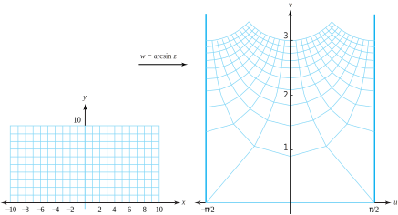

Section5.5Inverse Trigonometric and Hyperbolic Functions
We expressed trigonometric and hyperbolic functions in Section 5.4 in terms of the exponential function. In this section we look at their inverses. When we solve equations such as \(w=\sin z\) for \(z\text{,}\) we obtain formulas that involve the logarithm. Because trigonometric and hyperbolic functions are all periodic, they are many-to-one; hence their inverses are necessarily multivalued. The formulas for the inverse trigonometric functions are
\begin{align}
\arcsin z \amp = -i\log \left[ iz+(1-z^2 )^{\frac{1}{2}}\right],\tag{5.5.1}\\
\arccos z \amp = -i\log \left[ z+i(1-z^2 )^{\frac{1}{2}}\right], \text{ and }\notag\\
\arctan z \amp = \frac{i}{2}\log\left(\frac{i+z}{i-z}\right)\text{.}\notag
\end{align}
We can find the derivatives of any branch of these functions by using the chain rule:
\begin{align}
\frac{d}{dz}\arcsin z \amp = \frac{1}{(1-z^2 )^{\frac{1}{2}}},\tag{5.5.2}\\
\frac{d}{dz}\arccos z \amp = \frac{-1}{(1-z^2 )^{\frac{1}{2}}}, \text{ and }\notag\\
\frac{d}{dz}\arctan z \amp = \frac{1}{1+z^2 }\text{.}\notag
\end{align}
We derive Equations (5.5.1) and (5.5.2) and leave the others as exercises. If we take a particular branch of the multivalued function, \(w=\arcsin z\text{,}\) we have
Multiplying both sides of this equation by \(e^{iw}\) gives \((e^{iw})^2 -2ize^{iw}-1=0\text{,}\) which is a quadratic equation in terms of \(e^{iw}\text{.}\) Using the quadratic equation to solve for \(e^{iw}\text{,}\) we obtain
where the multivalued logarithm is used. To construct a specific branch of \(\arcsin z\text{,}\) we must first select a branch of the square root and then select a branch of the logarithm.
We get the derivative of \(w=\arcsin z\) by starting with the equation \(\sin w=z\) and differentiating both sides, using the chain rule:
When the principal value is used, \(w=\arcsin z=-i\mathrm{Log}\left[ iz+(1-z^2 )^{\frac{1}{2}}\right]\) maps the upper half-plane \(\{z:\mathrm{Im}(z) >0\}\) onto a portion of the upper half-plane \(\{w:\mathrm{Im}(w) >0\}\) that lies in the vertical strip \(\{w:\frac{-\pi}{2}\lt \mathrm{Re}(w) \lt \frac{\pi}{2}\}\text{.}\) The image of a rectangular grid in the \(z\) plane is a “spider web” in the \(w\) plane, as Figure 5.5.1 shows.

Figure5.5.1.A rectangular grid is mapped onto a spider web by \(w=\arcsin z\)
\begin{equation*}
\arcsin \sqrt{2}=\frac{\pi}{2}+2n\pi \pm i\ln(\sqrt{2}+1), \text{ where } n \text{ is an integer }
\end{equation*}
Example5.5.3.
Suppose that we make specific choices in Equation (5.5.3) by selecting \(+i\) as the value of the square root \([1-(\sqrt{2})^2]^{\frac{1}{2}}\) and using the principal value of the logarithm. With \(f(z) =\mathrm{Arcsin}\,z\text{,}\) The result is